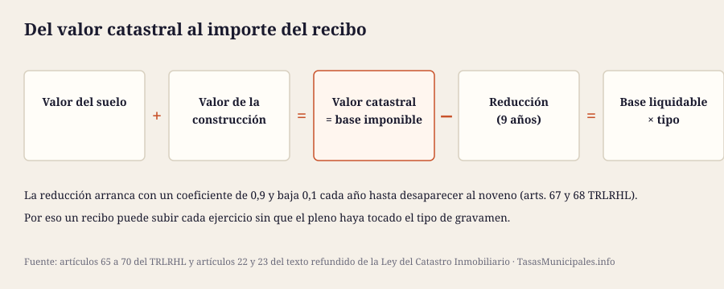
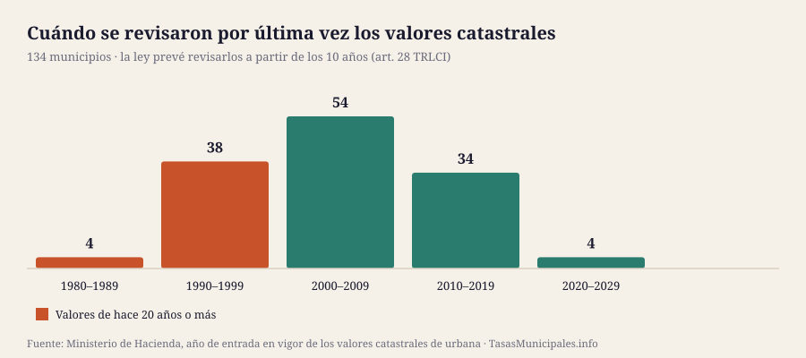

Qué es el valor catastral
El valor catastral es el valor administrativo que el Catastro asigna a cada inmueble, y se compone de dos partes que conviene tener separadas en la cabeza: el valor del suelo y el valor de la construcción. Esa distinción no es teórica: la plusvalía municipal se calcula solo sobre el valor del suelo, así que en una venta necesitarás el desglose, no el total.
Lo determina la Dirección General del Catastro con los criterios del artículo 23 del texto refundido de la Ley del Catastro Inmobiliario: la localización y las circunstancias urbanísticas del suelo, el coste de ejecución de la construcción, su uso, calidad y antigüedad, los gastos y beneficios de la promoción y las circunstancias del mercado.
Y tiene un límite legal expreso: el valor catastral no puede superar el valor de mercado. Para garantizarlo se aplica un coeficiente de referencia al mercado que se fija por orden ministerial (art. 23.2). Es la razón por la que el valor catastral de una vivienda suele estar bastante por debajo de lo que costaría venderla.
Cómo consultar tu valor catastral
Hay tres vías, y solo dos te dan la cifra:
- Tu último recibo del IBI. Aparece como «valor catastral» o «base imponible», junto con la referencia catastral de 20 caracteres. Es la vía más rápida.
- La Sede Electrónica del Catastro con identificación digital (Cl@ve, certificado electrónico o DNIe): «Consulta de datos catastrales» → «Consulta de un inmueble». Verás el valor total y su desglose entre suelo y construcción, además del uso, la superficie y el año de construcción.
- La consulta libre, sin identificarte, te da superficie, uso y año, pero no el valor catastral: es un dato protegido que solo se muestra al titular. Si no puedes identificarte, pídelo en tu ayuntamiento o en la Gerencia Territorial del Catastro.
Valor catastral y valor de referencia: no son lo mismo
Es la confusión más extendida desde 2022, y cuesta dinero cuando se mezclan. Los dos los calcula el Catastro, pero sirven para cosas distintas:
| Valor catastral | Valor de referencia | |
|---|---|---|
| Para qué sirve | Base imponible del IBI y base objetiva de la plusvalía municipal | Base imponible del ITP y del Impuesto sobre Sucesiones y Donaciones |
| Cómo se calcula | Ponencia de valores del municipio, con módulos de suelo y construcción | Del análisis de los precios comunicados por los notarios en las compraventas, con un informe anual y un mapa de valores |
| Límite | No puede superar el valor de mercado (art. 23.2 TRLCI) | No puede superar el valor de mercado (disposición final tercera TRLCI) |
| Cada cuánto cambia | Solo con una valoración colectiva o una actualización por coeficientes | Se determina cada año |
| Es público | No: dato protegido, solo para el titular | Sí: cualquiera puede consultarlo |
Traducido: el valor de referencia no cambia tu IBI, y el valor catastral no determina lo que pagas al comprar. Que el valor de referencia de tu vivienda sea alto no encarece el recibo del IBI; encarece el impuesto de quien la compre o la herede.
Del valor catastral al recibo: la base liquidable
La cuota del IBI no es «valor catastral × tipo» sin más. El valor catastral es la base imponible (art. 65 TRLRHL); sobre ella se aplica una reducción y el resultado es la base liquidable, que es la cifra que se multiplica por el tipo de gravamen municipal.
Esa reducción existe para amortiguar las subidas de las valoraciones colectivas. Dura nueve años y decrece sola: arranca con un coeficiente de 0,9 y baja 0,1 cada ejercicio hasta desaparecer (arts. 67 y 68 TRLRHL).
| Ejercicio desde la revisión | Coeficiente reductor | Efecto |
|---|---|---|
| Año 1 | 0,9 | 90% del incremento sigue sin tributar |
| Año 2 | 0,8 | 80% del incremento sigue sin tributar |
| Año 3 | 0,7 | 70% del incremento sigue sin tributar |
| Año 4 | 0,6 | 60% del incremento sigue sin tributar |
| Año 5 | 0,5 | 50% del incremento sigue sin tributar |
| Año 6 | 0,4 | 40% del incremento sigue sin tributar |
| Año 7 | 0,3 | 30% del incremento sigue sin tributar |
| Año 8 | 0,2 | 20% del incremento sigue sin tributar |
| Año 9 | 0,1 | 10% del incremento sigue sin tributar |
Cada cuánto se revisan y qué dice la ley
Una valoración colectiva de carácter general es un procedimiento completo: el Catastro aprueba una ponencia de valores para todo el término municipal, la somete a información pública y la publica en el boletín oficial de la provincia. Se inicia de oficio o a solicitud del ayuntamiento.
El artículo 28 del TRLCI marca dos plazos que casi nadie cita: solo puede iniciarse una vez transcurridos al menos cinco años desde la entrada en vigor de los valores anteriores, y «se realizará, en todo caso, a partir de los 10 años» desde esa fecha.
Contrastemos ese «en todo caso» con la realidad de los 134 municipios que cubrimos: la antigüedad mediana de la última valoración es de 21 años, 128 superan los diez y 80 arrastran valores de hace veinte o más.

| Década de la última valoración | Municipios | % del total |
|---|---|---|
| 1980–1989 | 4 | 3,0% |
| 1990–1999 | 38 | 28,4% |
| 2000–2009 | 54 | 40,3% |
| 2010–2019 | 34 | 25,4% |
| 2020–2029 | 4 | 3,0% |
Los municipios con la ponencia más antigua de la guía
| Municipio | Provincia | Año de la valoración | Antigüedad |
|---|---|---|---|
| Sarria | Lugo | 1986 | 40 años |
| O Porriño | Pontevedra | 1987 | 39 años |
| Cangas | Pontevedra | 1988 | 38 años |
| Marín | Pontevedra | 1988 | 38 años |
| Tarazona | Zaragoza | 1990 | 36 años |
| O Carballiño | Ourense | 1990 | 36 años |
| Verín | Ourense | 1990 | 36 años |
| Vigo | Pontevedra | 1990 | 36 años |
| Alcañiz | Teruel | 1994 | 32 años |
| Navia | Asturias | 1994 | 32 años |
| Almendralejo | Badajoz | 1994 | 32 años |
| Valladolid | Valladolid | 1995 | 31 años |
Análisis completo: por qué comparar tipos de IBI no dice cuánto se paga →
La otra vía: actualización por coeficientes
Sin abrir una valoración colectiva, los valores catastrales pueden actualizarse aplicando coeficientes aprobados en la Ley de Presupuestos Generales del Estado (art. 32.1 TRLCI). Es la vía rápida, y puede ser al alza o a la baja.
Además, el artículo 32.2 permite actualizar los valores urbanos de un municipio concreto en función del año de su ponencia, pero solo si el ayuntamiento lo solicita y se cumplen tres requisitos:
- Que hayan pasado al menos cinco años desde la entrada en vigor de los valores de la anterior valoración colectiva general.
- Que existan diferencias sustanciales entre los valores de mercado y los que sirvieron de base a los valores vigentes, y que afecten de modo homogéneo a todo el municipio.
- Que la solicitud se comunique a la Dirección General del Catastro antes del 31 de mayo del ejercicio anterior al de aplicación.
De aquí sale una consecuencia política interesante: la actualización a la baja también existe, y en los años posteriores a 2008 se usó. Cuando un ayuntamiento no pide nada, los valores se quedan donde están.
Qué revisar y cómo corregirlo
Conviene separar dos problemas distintos, porque el trámite y el plazo no son los mismos.
Los datos del inmueble no coinciden con la realidad
Superficie que no cuadra, un uso que ya no es el que consta, una reforma o una demolición no registradas, una titularidad sin actualizar tras una compra o una herencia. Se corrige ante el Catastro, y el artículo 18 del TRLCI regula el procedimiento de subsanación de discrepancias, que la Administración puede iniciar de oficio cuando conoce la falta de concordancia. Los efectos van desde la resolución, no hacia atrás, así que cuanto antes se detecte, mejor.
No estás de acuerdo con el valor asignado
Aquí sí corre el plazo: contra la notificación del nuevo valor catastral cabe recurso de reposición o reclamación económico-administrativa ante el TEAR en el plazo de un mes, y son excluyentes entre sí. Pasado ese mes el valor queda firme y solo podrá discutirse en la siguiente valoración.
Este apartado resume el procedimiento general y no es asesoramiento jurídico: los plazos y el órgano competente concretos figuran en la notificación que recibas.
El año de tu valoración catastral, municipio a municipio
En la ficha de cada uno de los 134 municipios publicamos el año de entrada en vigor de sus valores catastrales de urbana, tal y como lo recoge el Ministerio de Hacienda, junto con el tipo de IBI que se aplica sobre ellos.
Comparador con el año de valoración de los 134 municipios → · Calcular mi IBI con mi valor catastral →